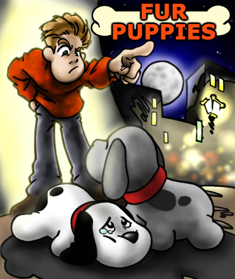
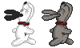
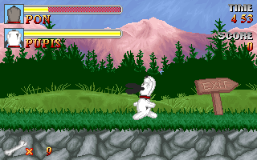
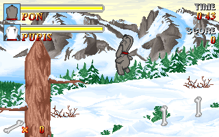
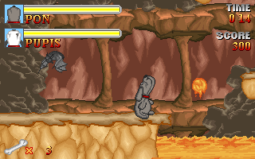
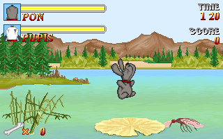

Pon and Pupis, two puppies bought by a family shortly after being born, are brutally abandoned. Alone and lost in the middle of the city, they only have each other for survival in a world that rejects them. Together they must find enough courage to undertake the long journey that is to take them again to their true home.
Help them in the long path that awaits them and give them back the joy that men's cruelty took from them.
"You'll fall in love with Fur Puppies!"



